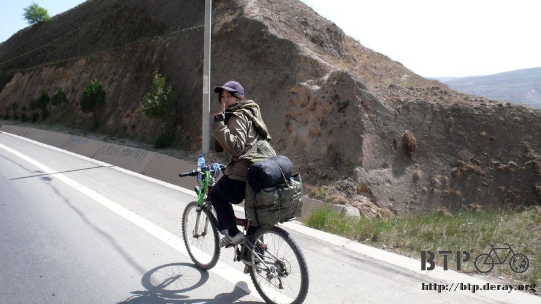
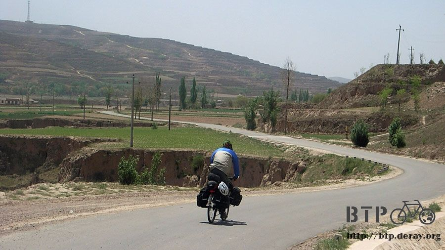
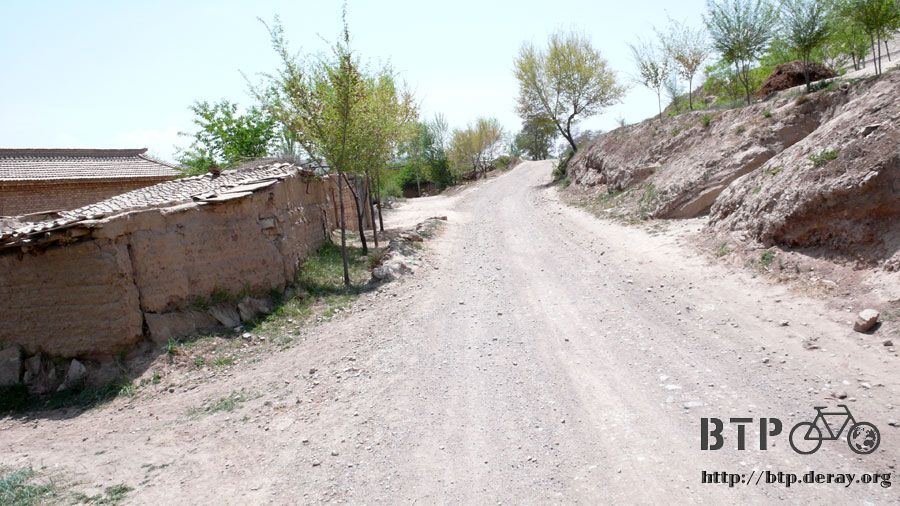
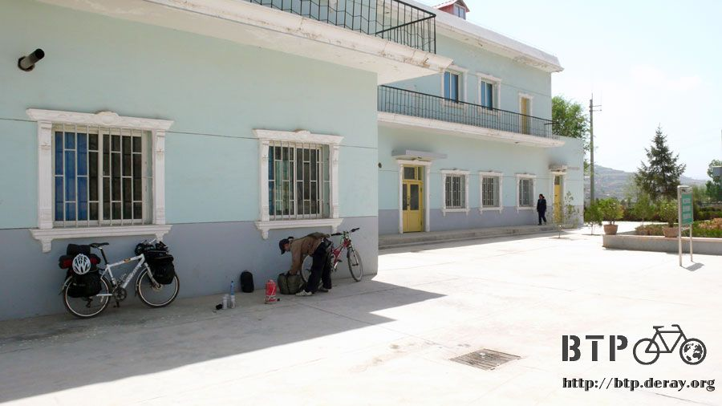
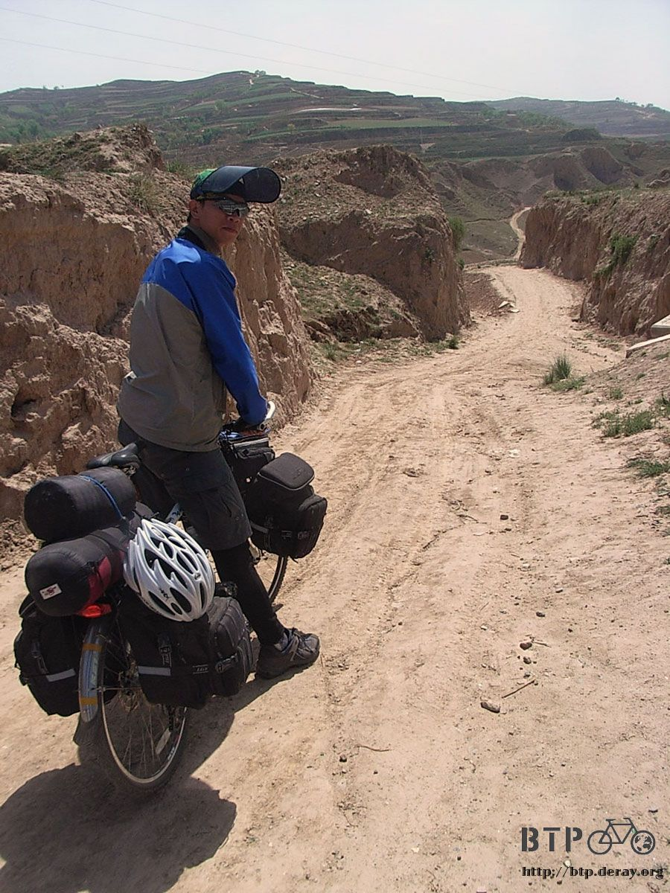
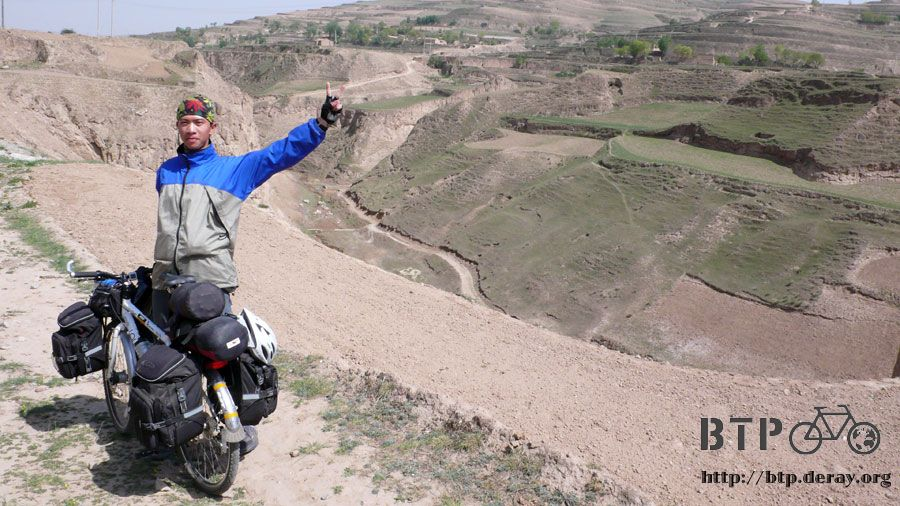
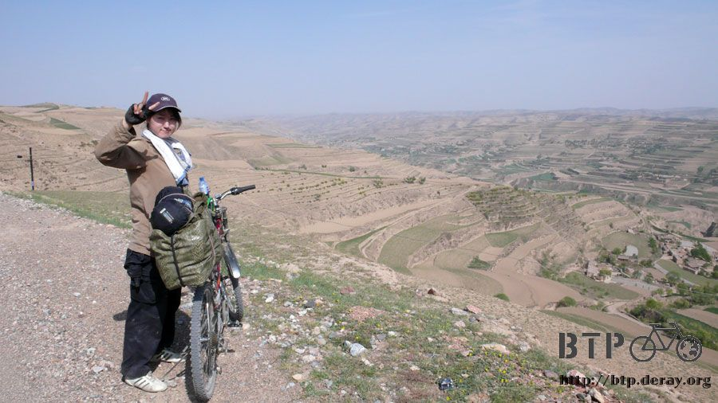
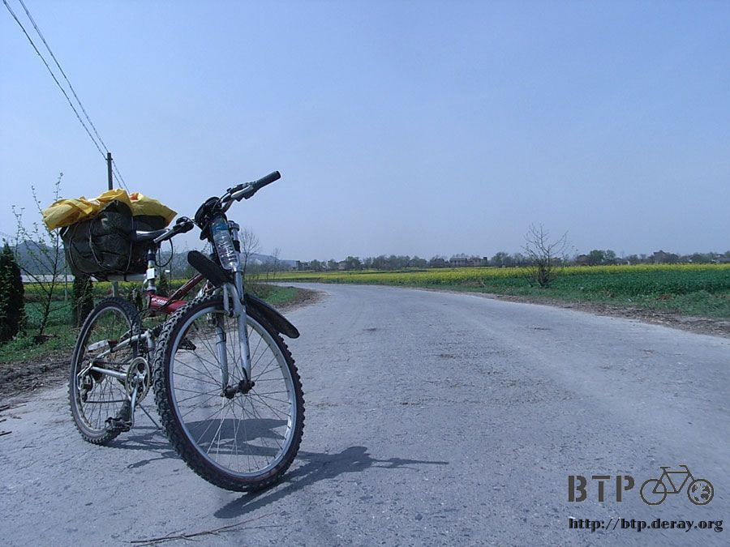

新井夏代
將車子牽出房間準備要出發的時候，發現後輪沒氣了。
都還沒開始騎車，怎麼就破胎了呢~_~
還好是破在房間裡，換胎比較輕鬆，仔細研究了一下，原來是被一根一公分左右，比頭髮還細的彎曲鐵絲刺穿的。
因為洞很小，所以被刺穿的時候沒有發現，而是放了一個晚上之後，氣就慢慢的洩光了，目前累積破胎兩次。
今天想吃不一樣的早餐，所以買了麵包，一個五角，看起來甜甜的，比較適合我的口味。
吃起來很像發糕，真佩服自己這麼會挑好吃的東西(還是只是單純的我很好養=..=)。

接著走昨天下來那條公路，因為往蘭州只剩下110公里了，順利的話今天應該就可以抵達，順利的話啦....
剛走沒多久，公路就消失了，變成岔路，一條是高速公路，另一條我直覺就覺得應該是給腳踏車走的輔路。
沒想太多就騎上去，一條路能不能給自行車走，我都看路上的車輪印，要是有明顯的腳踏車痕跡，那就盡管走吧。

騎了大約十公里，正在發呆的時候，聽到對面車道有人用很不標準的中文跟我說
『你好～』
原來也是騎單車旅行的人，一個在日本大阪出生的韓國人，新井夏代，28歲。

三月十九日從上海出發，騎了將近兩個月才到這裡，因為她每天只騎短短的五十公里。
第一眼看到她，只覺得她的行李為什麼可以這麼少？
那我帶那麼多東西是怎麼回事@@"
相同的是，我們今天的目的地同樣是蘭州，只是為什麼我要去蘭州，她也要去蘭州，
那我們會騎在同一條路上，卻往不同的方向，然後在路上相遇呢？
肯定是有一個人走錯了方向，問了路過騎摩托車的阿伯，原來騎錯路的人是我orz
阿伯教我們往回走，岔路的時候右轉，上高速公路就對了。
高速公路能走嗎？@@"
我就是因為在岔路的時候不走高速公路，所以才走錯路到這裡呀。
說不定這邊的高速公路比較寬宏大量，可以開放自行車通行也不一定。
跟著阿伯的指示，真的傻傻的走去高速公路碰運氣，結果當然是還沒過收費站就被打槍了/_\
那怎麼辦呢？岔路的兩條都走過了，沒別的路好走啦，難不成要往回走到定西去？

一個交通人員說有一條小便道可以走，但是路比較難走，最後的選擇，那就走吧。
這路真的很小而且很不好走，因為早上大迷路的關係，所以騎到中午才騎了40公里，

在一個小鎮吃午餐，炸醬麵配啤酒，因為外頭太陽實在太大，不喝點涼的會中暑。
看看夏代的筆記本，她一邊旅行一邊學中文，也一邊學中國料理。
『吃就是一種學習。』這是她的說法=..=

剛剛以為路已經夠爛了，沒想到爛的還在後面，吃完飯後所騎的，已經不能被稱為路了。
只是沿著鐵軌所附設的一條泥巴路而已呀~_~
走這邊真的可以到蘭州嗎？心裡非常非常的懷疑，但沒別的路只好就這麼傻傻的走。

半路走一走，居然變成火車站的側邊入口，看來是迷路得非常徹底～
那就將錯就錯，在火車站休息一下，乘涼兼補充一下飲水，火車站的員工很熱心的招呼我們。
這是一個很小的站，火車過站都不會停，但是站務人員還是會舉旗迎送每一列經過的火車。

休息半小時，繞過火車站接著往下走。
火車站的人說，接下來走，就要爬過一座山，叫做高崖山，聽名字就很恐怖，實際騎來起更是誇張。

有很多地方必須要用牽的方式才有辦法走，斜坡超過35度，騎是騎不動的，路則是泥巴路配上沙礫小碎石。
一路用牽的爬上兩千公尺的山，那景色真是非常的壯麗。

這是屬於騎單車的瘋子旅行者所欣賞的景色，駐足良久，非常感動。


滑下山後，到一個高崖鎮，因為我騎在前面，偶爾就回頭看一下她有跟上來嗎，
結果到鎮上之後，居然人就不見了，騎回頭去看她怎麼了，原來夏代的腳踏車壞掉了，後輪爆胎，
我想說應該沒問題吧，畢竟她自己一個人騎單車環日本騎兩次，一次花三個月，一次花一個月，
爆胎這種小事只要換一下就好了，不然她之後要旅行五個月，
從上海到蘭州，然後到拉薩，進入尼泊爾，然後印度，再到泰國，繞一圈到香港。
這一段路也真夠瞧的，總不可能什麼備胎跟修車工具都沒帶吧。
結果真的什麼都沒帶！！！！/_\
難怪她的行李那麼少，什麼工具跟單車備用品都沒有帶也敢出來騎車，真的是賭命在旅行。
她說她之前已經爆胎過兩次，但是很幸運都是爆胎在城市，而中國到處都是自行車店，
所以不怕沒地方可以修裡，而且價錢又很便宜，換內胎只要十塊錢而已。
但我想這不是自行車店多不多，或是價錢便不便宜的問題，如果今天車子是壞在荒郊野外的話，那該怎麼辦呢？

牽著車到腳踏車店，老闆會換，可是沒有26C的內胎了，得等到明天才有料件。
所以我就先拿自己帶的給頂著用，幫車店老闆一起換內胎，
自己出內胎的話，工本費只需要三塊錢就可以維修完畢。
之所以會爆胎，不是因為被什麼東西刺穿，而是輪胎內的襯帶破掉了，內胎摩擦到輪框的螺絲，所以就破掉。
連內胎都沒有的自行車店，果然連襯帶也沒有，就先用膠帶將斷掉的襯帶黏起來，
這只是緩兵之計，一定要找一間比較大的自行車店來更換才行，不知道這次修好能撐多久？

修完車已經下午五點，今天就在這個高崖鎮落腳，從這邊到蘭州大概是70公里左右，明天只需要半天的時間就可以到。
小小的鎮只有一個小小的旅館，一個晚上的房價，打破了旅行以來的紀錄，只要五塊錢。
旅館裡有一個小朋友，應該是由姥姥在照顧，小孩的名字叫做『打卡』(聽起來就是這樣~_~)
今年四歲，臉就是跟其他小孩一樣紅通通的，他很喜歡黏著夏代玩，
我不會逗小孩，所以就把我買了半個月還沒吃完的糖果分一粒給他吃，然後遮陽帽借他戴著玩。

甘肅真的很缺水，這個旅館沒有水龍頭，只有水缸裡的水可以洗洗臉舒服一下:D
而且洗完臉之後的水，不可以就往地上一灑，而是要回收到一個大臉盆裡，拿去做灌溉或是其他的用途。
這是旅館的姥姥特別交代的，因為她看到我把洗完臉的水倒在地上，很心疼的說這不可以倒掉。
在這邊想必連一滴水都很寶貴，田裡若要種什麼東西，都要用透明塑膠布蓋在土上面，以免水分散失。
夏代是一個啤酒愛好者，她可以什麼行李都沒帶，但是卻隨身攜帶啤酒的開瓶器XD
晚餐在這個小鎮裡的餐廳吃了牛肉麵和宮爆肉丁和炒青菜，
多虧了夏代，今天拍照比較方便，其實考慮的很久要不要把夏代給寫在遊記上。
因為一定會有很多人會想說『哇！豔遇耶！』
本來想說少寫一點就少增加我自己的麻煩，但是既然沒發生什麼事，只是因為巧合而相遇，那又何必管別人怎麼想呢。
能夠相遇算是緣分，雖然到了蘭州之後，一個要往新疆，一個要往西藏，但都是夢想的實踐者。

攝影：新井夏代，她的單車－熊櫻花。
繼續閱讀：5.14 蘭州，我不熟
中國-人民幣－ 1：4.3 台幣
5.13 |
總計：29元 |
早餐麵包兩個1元、午餐炸醬麵3.5元、啤酒2元、冰棒四隻2元、可樂2.5元、住店5元、晚餐牛肉麵3元、小炒10元 |
|